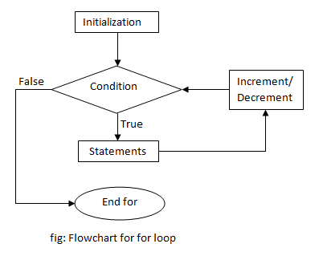

LOOPS In C++ O+Programming
Loops :
Loops in programming comes into use when we need to repeatedly execute a block of statements. For example: Suppose we want to print “Hello World” 10 times.
This can be done in two ways as shown below:
1.Iterative Method
Iterative method to do this is to write the printf() statement 10 times.
// C++ program to illustrate need of loops
#include <iostream>
using namespace std;
int main()
{
cout << "Hello World\n";
cout << "Hello World\n";
cout << "Hello World\n";
cout << "Hello World\n";
cout << "Hello World\n";
cout << "Hello World\n";
cout << "Hello World\n";
cout << "Hello World\n";
cout << "Hello World\n";
cout << "Hello World\n";
return 0;
} |
2.Using Loops
In Loop, the statement needs to be written only once and the loop will be executed 10 times as shown below.
In computer programming, a loop is a sequence of instructions that is repeated until a certain condition is reached.
- An operation is done, such as getting an item of data and changing it, and then some condition is checked such as whether a counter has reached a prescribed number.
- Counter not Reached: If the counter has not reached the desired number, the next instruction in the sequence returns to the first instruction in the sequence and repeat it.
- Counter reached: If the condition has been reached, the next instruction “falls through” to the next sequential instruction or branches outside the loop.
There are mainly two types of loops:
Entry Controlled loops:
In this type of loops the test condition is tested before entering the loop body. For Loop and While Loop are entry controlled loops.
Exit Controlled Loops:
In this type of loops the test condition is tested or evaluated at the end of loop body. Therefore, the loop body will execute atleast once, irrespective of whether the test condition is true or false. do – while loop is exit controlled loop.
for Loop:
A for loop is a repetition control structure which allows us to write a loop that is executed a specific number of times. The loop enables us to perform n number of steps together in one line.
Syntax:
for (initialization expr; test expr; update expr)
{
// body of the loop
// statements we want to execute
} |
In for loop, a loop variable is used to control the loop. First initialize this loop variable to some value, then check whether this variable is less than or greater than counter value. If statement is true, then loop body is executed and loop variable gets updated . Steps are repeated till exit condition comes.
Initialization Expression:
In this expression we have to initialize the loop counter to some value.
for example: int i=1;
Test Expression:
In this expression we have to test the condition. If the condition evaluates to true then we will execute the body of loop and go to update expression otherwise we will exit from the for loop.
For example: i <= 10;
Update Expression:
After executing loop body this expression increments/decrements the loop variable by some value.
for example: i++;
// C++ program to illustrate for loop
#include <iostream>
using namespace std;
int main()
{
for (int i = 1; i <= 10; i++)
{
cout << "Hello World\n";
}
return 0;
} |
flowchart for Forloop:
While Loop
While studying for loop we have seen that the number of iterations is known beforehand, i.e. the number of times the loop body is needed to be executed is known to us.
while loops are used in situations where we do not know the exact number of iterations of loop beforehand. The loop execution is terminated on the basis of test condition.
Syntax:
We have already stated that a loop is mainly consisted of three statements – initialization expression, test expression, update expression. The syntax of the three loops – For, while and do while mainly differs on the placement of these three statements.
initialization expression;
while (test_expression)
{
// statements
update_expression;
} |
// C++ program to illustrate for loop
#include <iostream>
using namespace std;
int main()
{
// initialization expression
int i = 1;
// test expression
while (i < 6)
{
cout << "Hello World\n";
// update expression
i++;
}
return 0;
} |
Output:
Hello World Hello World Hello World Hello World Hello World
flowchart for While loop:
do while loop:
In do while loops also the loop execution is terminated on the basis of test condition. The main difference between do while loop and while loop is in do while loop the condition is tested at the end of loop body, i.e do while loop is exit controlled whereas the other two loops are entry controlled loops.
Note: In do while loop the loop body will execute at least once irrespective of test condition.
Syntax:
initialization expression;
do
{
// statements
update_expression;
} while (test_expression); |
Note: Notice the semi–colon(“;”) in the end of loop.
// C++ program to illustrate do-while loop
#include <iostream>
using namespace std;
int main()
{
int i = 2; // Initialization expression
do
{
// loop body
cout << "Hello World\n";
// update expression
i++;
} while (i < 1); // test expression
return 0;
} |
Output:
Hello World |
In the above program the test condition (i<1) evaluates to false. But still as the loop is exit – controlled the loop body will execute once.
flowchart for Do-while loop:
What about an Infinite Loop?
An infinite loop (sometimes called an endless loop ) is a piece of coding that lacks a functional exit so that it repeats indefinitely. An infinite loop occurs when a condition always evaluates to true. Usually, this is an error.
#include <iostream>
using namespace std;
int main ()
{
int i;
// This is an infinite for loop as the condition
// expression is blank
for ( ; ; )
{
cout <<"This loop will run forever.\n";
}
// This is an infinite for loop as the condition
// given in while loop will keep repeating infinitely
/*
while (i != 0)
{
i-- ;
cout << "This loop will run forever.\n";
}
*/
// This is an infinite for loop as the condition
// given in while loop is "true"
/*
while (true)
{
cout << "This loop will run forever.\n";
}
*/
} |
Output:
This loop will run forever. This loop will run forever. ................... |
Important Points:
- Use for loop when number of iterations is known beforehand, i.e. the number of times the loop body is needed to be executed is known.
- Use while loops where exact number of iterations is not known but the loop termination condition is known.
- Use do while loop if the code needs to be executed at least once like in Menu driven programs